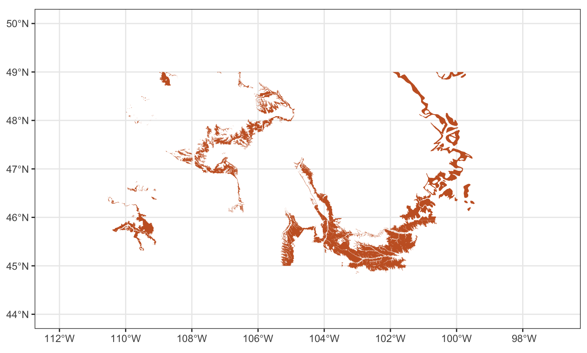
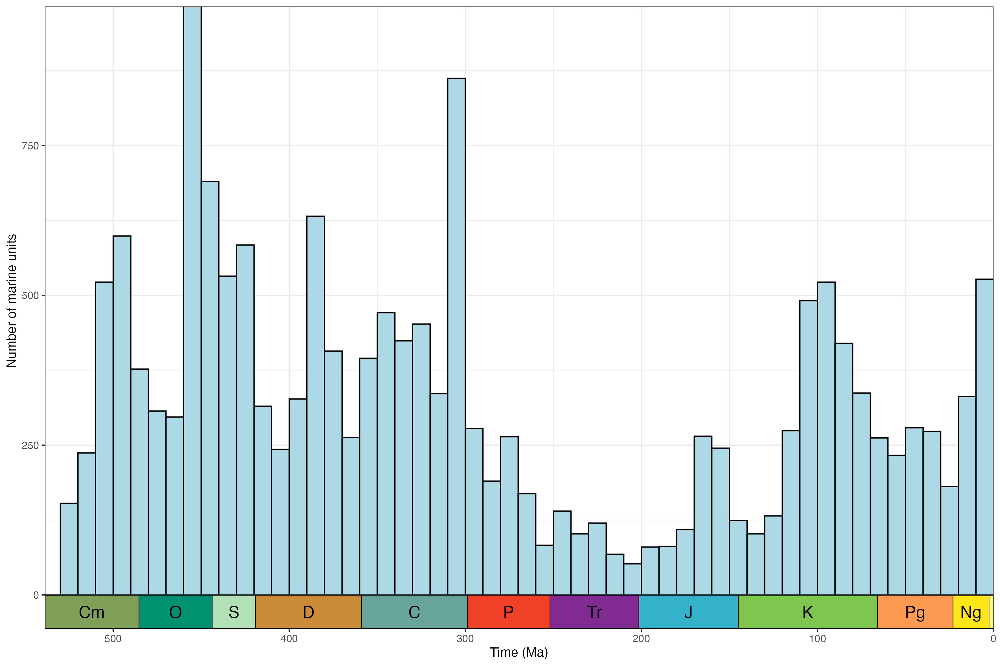
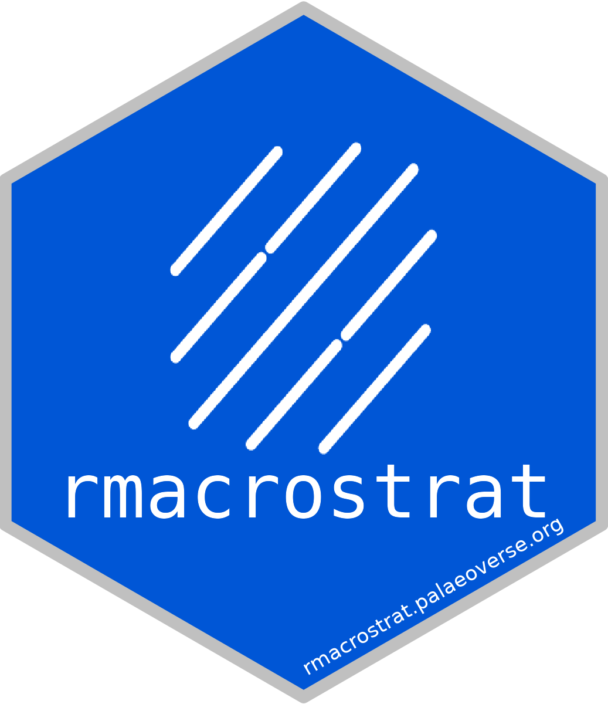

The goal of rmacrostrat is to streamline and improve accessibility to the geological database Macrostrat. The package provides functionality for querying the database via the dedicated application programming interface (API) and retrieving various geological data (e.g., lithostratigraphic units) and definitions/metadata associated with those data and Macrostrat more broadly.
Development team
- Lewis A. Jones, Universidade de Vigo
- William Gearty, American Museum of Natural History
- Christopher D. Dean, University College London
- Bethany J. Allen, ETH Zürich
Installation
The stable version of rmacrostrat can be installed from CRAN using:
install.packages("rmacrostrat")You can install the development version of rmacrostrat from GitHub with:
# install.packages("devtools")
devtools::install_github("palaeoverse/rmacrostrat")Example usage
A minimal example of getting and plotting a stratigraphic column for the San Juan Basin:
# Load packages
library(rmacrostrat)
library(ggplot2)
library(ggrepel)
library(deeptime)
# Get the column definition of the San Juan Basin
column_def <- def_columns(column_name = "San Juan Basin")
# Using the column ID, retrieve all units of Cretaceous age
san_juan_units <- get_units(column_id = column_def$col_id,
interval_name = "Cretaceous")
# Specify x_min and x_max in dataframe
san_juan_units$x_min <- 0
san_juan_units$x_max <- 1
# Tweak values for overlapping units
san_juan_units$x_max[10] <- 0.5
san_juan_units$x_min[11] <- 0.5
# Add midpoint age for plotting
san_juan_units$m_age <- (san_juan_units$b_age +
san_juan_units$t_age) / 2
# Plot stratigraphic column
ggplot(san_juan_units, aes(ymin = b_age, ymax = t_age,
xmin = x_min, xmax = x_max)) +
# Plot units, colored by rock type
geom_rect(fill = san_juan_units$color, color = "black") +
# Add text labels
geom_text_repel(aes(x = x_max, y = m_age, label = unit_name),
box.padding = 0.1, nudge_x = 3,
size = 3.5) +
# Reverse direction of y-axis
scale_y_reverse(limits = c(145, 66), n.breaks = 10,
name = "Time (Ma)") +
# Theming
theme_classic() +
theme(legend.position = "none",
axis.line.x = element_blank(),
axis.title.x = element_blank(),
axis.text.x = element_blank(),
axis.ticks.x = element_blank()) +
# Add geological time scale
coord_geo(pos = "left", dat = list("stages"), rot = 90)A minimal example of getting and plotting outcrop data for the Hell Creek formation:
# Load libraries
library(rmacrostrat)
library(ggplot2)
library(sf)
# Get data for the chosen formation
hc_def <- def_strat_names(strat_name = "Hell Creek", rank = "Fm")
# Get spatial outcrop data for the formation
hc <- get_map_outcrop(strat_name_id = hc_def$strat_name_id, sf = TRUE)
# Plot the map
ggplot() +
geom_sf(data = hc, fill = "#C7622B", lwd = 0) +
coord_sf(xlim = c(-112, -97), ylim = c(44, 50)) +
theme_bw()
A minimal example of getting and plotting the number of marine units through time for North America:
# Load libraries
library(rmacrostrat)
library(ggplot2)
library(deeptime)
# Get all carbonate units for North America
units <- get_units(environ_class = "marine",
interval_name = "Phanerozoic",
project_id = 1)
# Add mid age for units
units$mid_age <- (units$b_age + units$t_age) / 2
# Plot data
ggplot(units, aes(x = mid_age)) +
geom_histogram(binwidth = 10, center = 5,
color = "black", fill = "#add8e6") +
scale_y_continuous("Number of marine units") +
scale_x_reverse("Time (Ma)", limits = c(538.8, 0)) +
theme_bw() +
theme(legend.title = element_blank(),
legend.position.inside = c(0.1, 0.9)) +
coord_geo()
Extensive example usage of rmacrostrat is provided in the package vignettes/tutorials. These can be accessed online or in R via:
browseVignettes(package = "rmacrostrat")How to contribute?
If you are interested in contributing to the rmacrostrat R package, you can do so by following these guidelines. We have also adopted a set of standards and structure to broadly follow for contributing to Palaeoverse R packages. If you would like to contribute to rmacrostrat, we strongly advise reading this document.
Code of Conduct
As with any community project, society, or meeting we feel it is important to established some expectations of behaviour in the rmacrostrat community. Please read our code of conduct, and reach out if you ever face any issues. Everyone has the right to live and work in a harassment-free environment.
Citation
If you use the rmacrostrat R package in your work, please cite as:
Jones, L.A., Dean, C.D., Gearty, W., and Allen, B.J. 2024. rmacrostrat: An R package for accessing and retrieving data from the Macrostrat geological database. EarthArXiv. doi: 10.31223/X5XX37.

Hexlogo by Miranta Kouvari